4th Fl - Playground of Happiness
Concept Illustration
Interactive art installation is triggered by motion. Central Park Zoo animals enjoying the four seasons of the park. Penguin is having a good time riding sled with the snowman. A grizzly bear strumming his guitar under the sunshine. Sea lions playing ball tricks. A ruffed lemur hangs from the trees reading his favorite book.
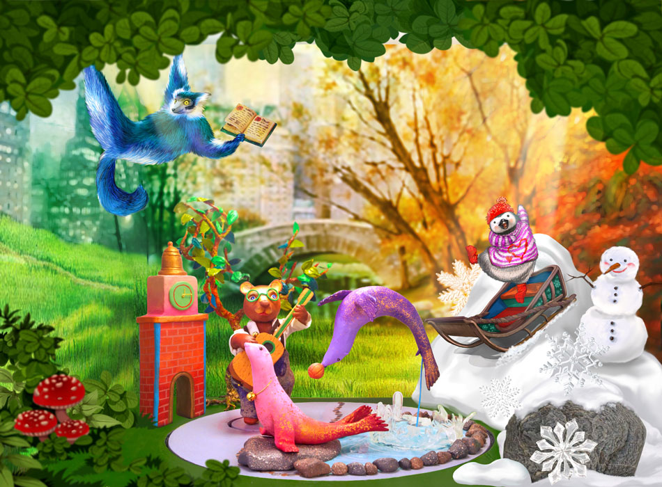3D Model Animated Mock-up Video
This simplified mock-up shows some of the key moving parts when the piece is activated. Bear and purple seal whimsically spin on smaller platforms as the larger platform also spins while overhead lights adjust colors each quarter turn referencing the cycles of the four seasons. Music Composed by: Nick Tardif.
Character Details
Ted (purple) Sea Lion leaps out of the water playing with a ball as Becky (pink) Sea Lion suns herself on a rock.
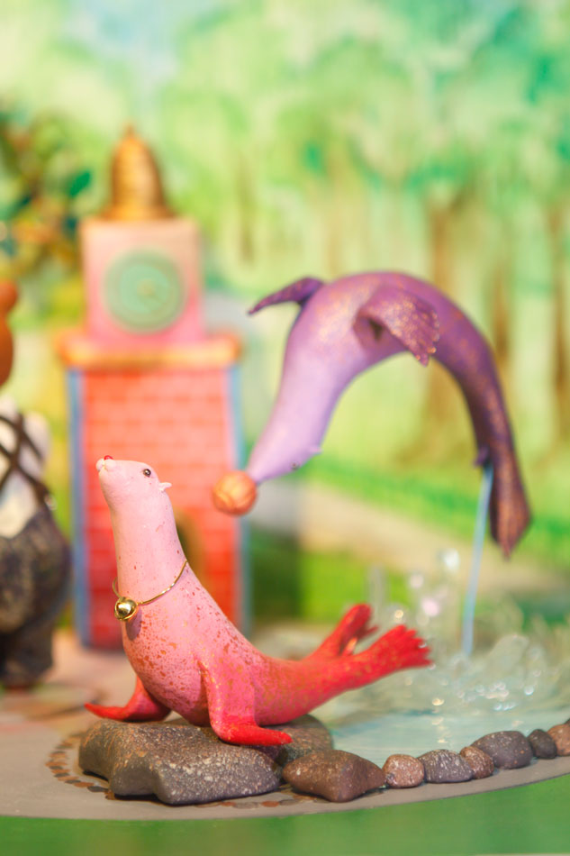Q Penguin joyously sleds down the snowy hills.
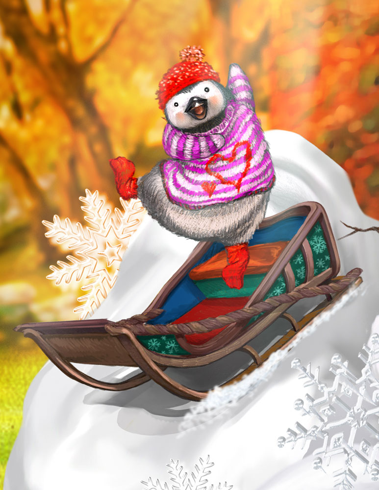The new friend Gary Snowman grins.
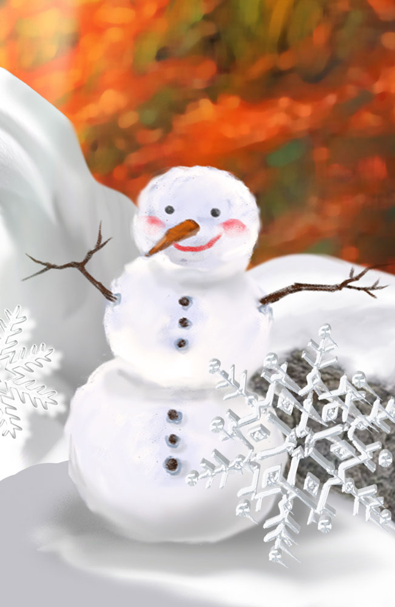Hansel Hanging Lemur reads his favorite book.
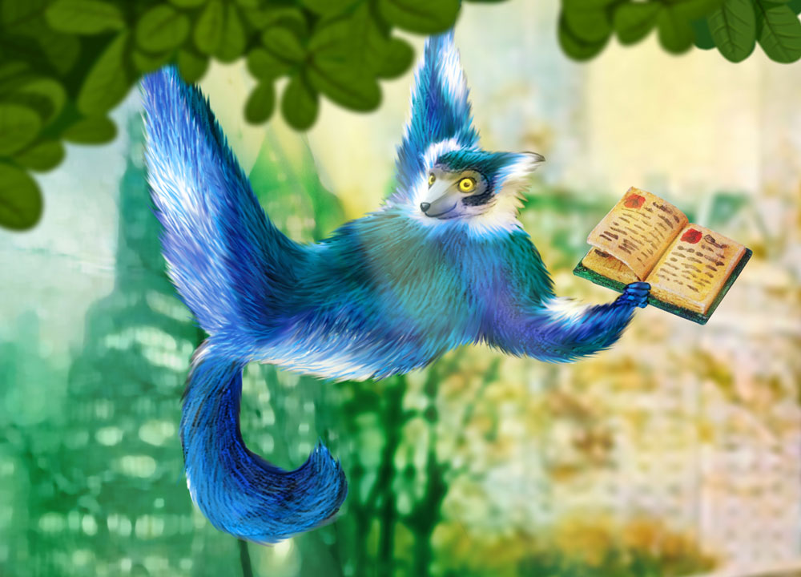Kuruk the Bear playing cheerful music.
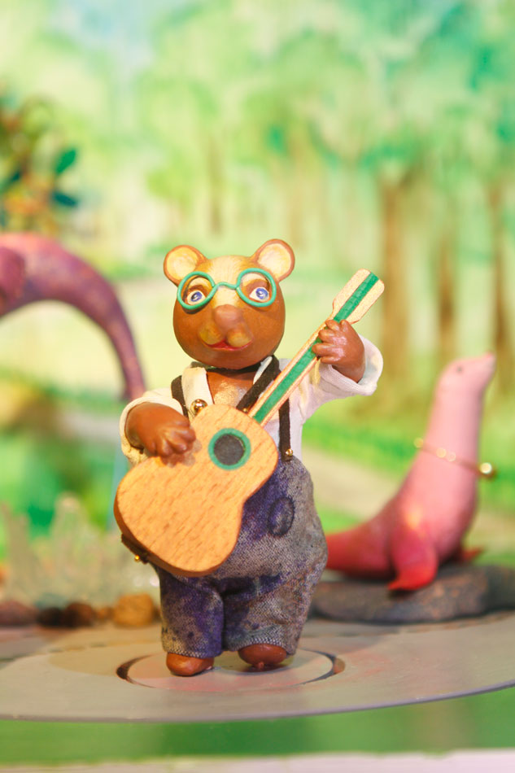Technical Specifications
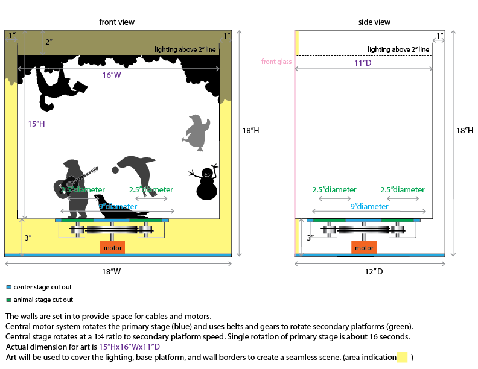Budget
| Description | Cost | |
|---|---|---|
| Design | Artist Fee | $2,000.00 |
| Materials | Servo Motors Rotary wheels and belts LED, Halogen Spots lighting Wiring Transformer (120v to 12v) / Power Supply Microcontroller (timer) Motion Sensor Hardware Wood, Clay, Paint, Fabric | $1,540.00 |
| Fabrication | Hand modeling characters. Constructing inner box, wiring, and mechanics. Painting characters and environment. | $8,400.00 |
| Shipping | Hand delivered. | $60.00 |
| Total | $12,000.00 |
7th Fl - Manhattan Magical Carrousel
Interactive art installation is triggered by motion. Urban animals are enjoying a night out in Midtown. A dainty dog lady riding in a purse is out for adventures. A cat in his finest garments is taking a stroll. A fancy pigeon peering down at the beautiful night view. A lizard trying on a high heel. A squirrel selling delicious roasted nuts, and a mouse delivering pizzas.
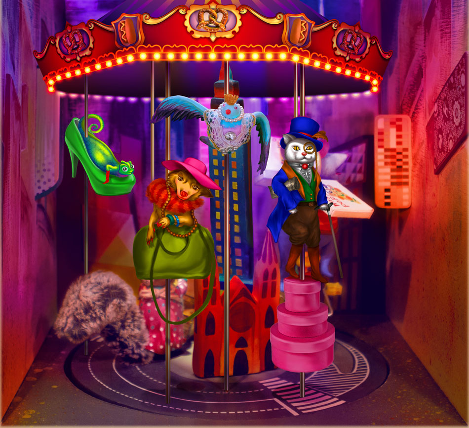3D Model Animated Mock-up Video
This simplified mock-up shows some of the key moving parts when the piece is activated. The carrousel rotates revealing the different characters as they slide up and down on poles upon the carousel. LED lights on the buildings and signs blink and change colors illuminating the street. Music Composed by: Nick Tardif.
Character Details
Anthony Mouse delivers hot pizza pies from his pizza wheel unicycle.
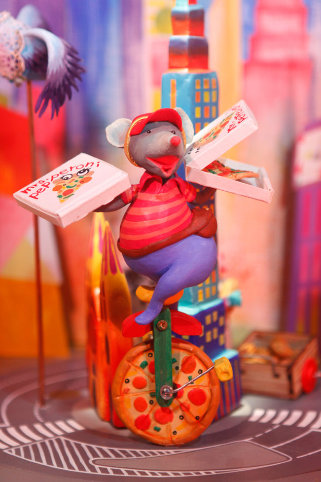Marcella Pigeon flutters past adorning her most fabulous pearls.
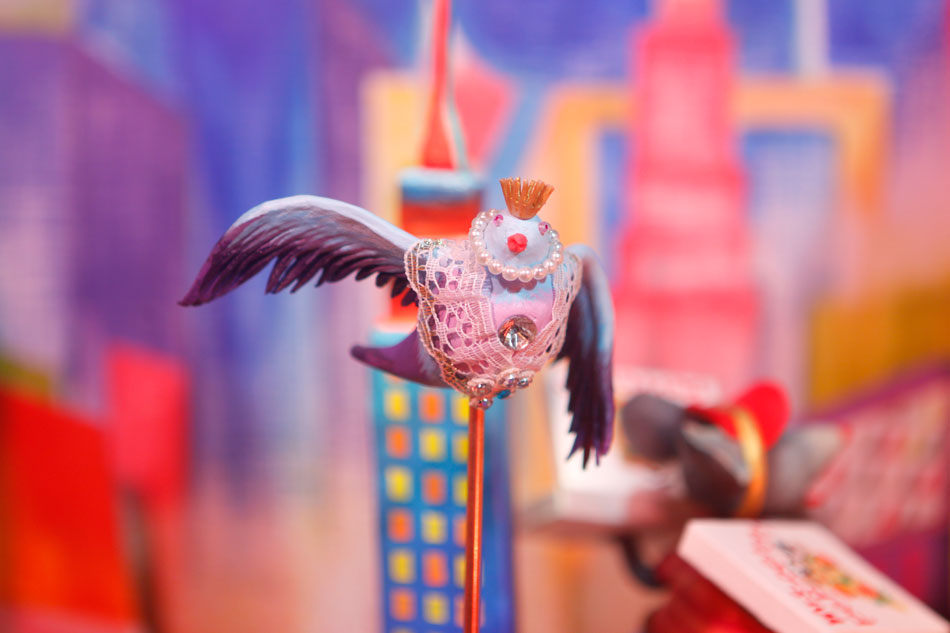Doris Squirrel offers her delicious roasted nuts for sale.
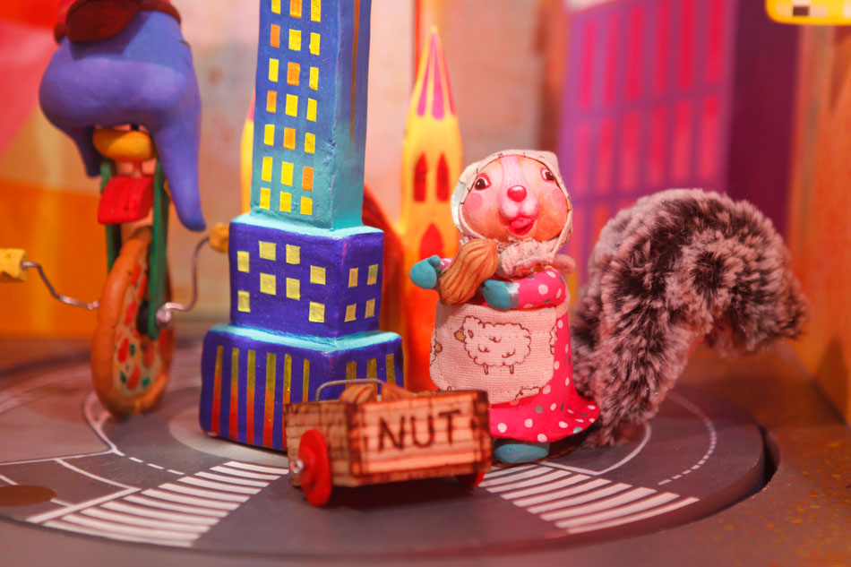Lacina Lizard trying on shoes. This one might be a a few sizes too big, but the color is just right!
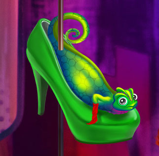Kiki Dog pops out of a large purse, enjoying views of the surrounding window displays.
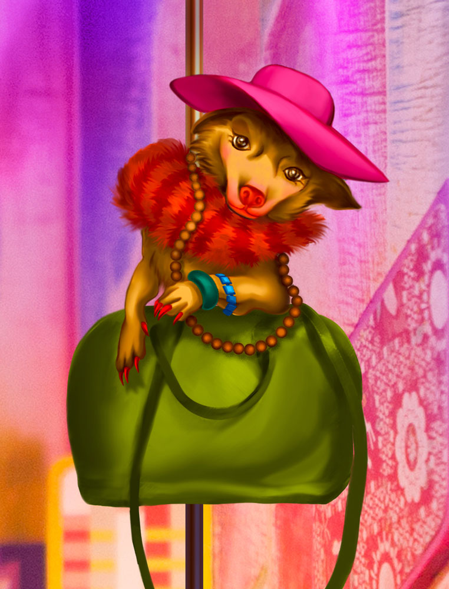Roberto Cat struts down 5th Ave in his finest clothes heading to a broadway play.
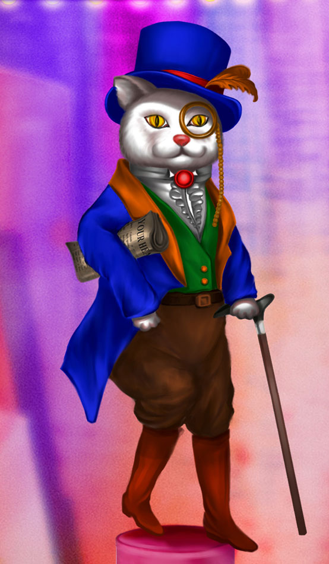Technical Specifications
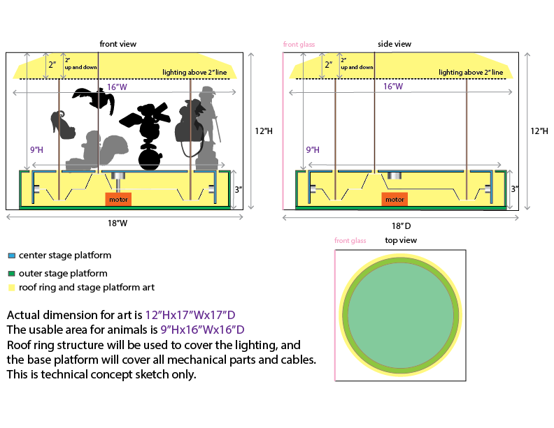Budget
| Description | Cost | |
|---|---|---|
| Design | Artist Fee | $2,000.00 |
| Materials | Servo Motors Rotary wheels and belts LED, Halogen Spots lighting Wiring Transformer (120v to 12v) / Power Supply Microcontroller (timer) Motion Sensor Hardware Wood, Clay, Paint, Fabric | $1,540.00 |
| Fabrication | Hand modeling characters. Constructing inner box, wiring, and mechanics. Painting characters and environment. | $8,400.00 |
| Shipping | Hand delivered. | $60.00 |
| Total | $12,000.00 |
Past Work Samples
Henry Bendel 5th Ave flagship store holiday display, 2011


Polymer clay Wagashi japanese dessert mini sculpture. 2014, High 5 Games

Resume
Education
2009 MFA New Genres, San Francisco Art Institute, USA
2005 Bachelor of Fine Arts, National Kaohsiung Normal University, Kaohsiung, Taiwan
Artist-in-residence
2016 The Vermont Studio Center, Vermont, USA
2010 The MacDowell Colony, New Hampshire, USA
2009 Anderson Ranch Arts Center, Colorado, USA
2006 TaiTung Railway Art Village, TaiTung, Taiwan
Screening
2010 Plastic Bag Girl, Screening, Mobile Arts Platform, SOMArts Culture Center, San Francisco, USA
2009 Plastic Bag Girl, Screening, International Guerrilla Video Festival, Dublin, Ireland
2008 Plastic Bag Girl, Screening, ATA, San Francisco, USA
Solo Exhibitions
2015 Border, CAN Foundation -- Old House Warming Project, Seoul, South Korea
2011 Glamorous Enclosure, Mooney Center Gallery, The College of New Rochelle, NY, USA
2008 Hide and Seek, Swell Gallery, San Francisco, USA
2008 Wet House, Diego Rivera Gallery, San Francisco, USA
2006 A Hundred Ways to Make Wishes, Stock 261, TaiTung Railway Art Village, TaiTung, Taiwan
Select Group Exhibitions
2016 Dream & Habitation, Collection Exhibition, National Taiwan Museum of Fine Arts, Taichung, Taiwan
2015 Bridge Self, Williamsburg Art and Historical Center, New York, USA
2015 Let’s meet at Jungdabang, Gallery Jungdabang Project, Seoul, South Korea
2012 Juried Exhibition, Brenda Taylor Gallery, New York, USA
2011 Sunday Brunch, This Red Door, New York, USA
2011 Exquisite Corpse Festival, Space of White Gallery, New York, USA
2011 School’s Out! Recent Grads competition winner show, Caelum Gallery, New York, USA
2011 Couplings, International Jury Exhibition, Gallery 110, Seattle, USA
2010 Rocking Horse, Taiwan Young Artist Exhibition, SOKA Art Center, Tainan & Taipei City, Taiwan
2010 An Eulogy on My Humble Abode, Arts in Storefronts Project: Chinatown, San Francisco Art Commission, San Francisco, USA
2010 Moments-100 Performances for the Hole-Take Two, SOMArts Culture Center, San Francisco, USA
2010 Lopped Off, Swell Gallery, San Francisco, USA
2010 Chain Reaction 11, City Hall, San Francisco, USA
2009 Instant Soup, Patton-Malott Gallery, Colorado, USA
2009 APAture 2009, Asian American Art Show, Goforaloop Gallery, San Francisco, USA
2009 LAB>, Queen’s Nail Gallery, San Francisco, USA
2009 Vernissage, MFA graduate exhibition, Herbst Pavilion, San Francisco, USA
2009 Locality, Mission Art Center, San Francisco, USA
2009 Soft Transgression, SFAI Graduate Center, San Francisco, USA
2008 Taste 2008, Root Division, San Francisco, USA
2005 Black-out Notice, Kaohsiung, Sin Pin Pier, Kaohsiung, Taiwan
2005 Art Player, Stock 20, Taichung Railway Art Village, Taichung, Taiwan
2005 I Recorded, Kaohsiung Culture Center, Kaohsiung, Taiwan
2004 Only I Record Is OK, NKNU Gallery, Kaohsiung, Taiwan
Select Solo Performances
2010 Cotton Candy as Self-portrait: Moments-100 Performances for the Hole-Take Two, SOMArts Culture Center, San Francisco, USA
2008 Plastic Bag Girl, Performance, SFMOMA, San Francisco, USA
2008 Poetry, Performance, The Garage Biennale, San Francisco, USA
2006 Change, Performance, Taipei, Taipei International Art Festival, Taipei, Taiwan
Curated Shows
2010 Symbolic Flow, SUB-Mission Gallery, San Francisco, USA
Workshops
2010 Hybrid Aesthetic Workshop, instructor, Adult Continue Education Program, San Francisco Art Institute, San Francisco, USA
2009 Interior Landscape Workshop, instructor, Center for Elders & Youth in the Arts, San Francisco, USA
2006 A Relay Race of Picture Book Mapping, instructor, TaiTung Railway Art Village, TaiTung, Taiwan
Publications
2016 An Illustrated History of Taiwan Art, ISBN 9789862821442, Artist Publish Inc. Taiwan
2014 The George Kuchar Reader, Estate of George Kuchar, Primary Information, New York
2014 Bat City Review, issue10, p.72-78, The New Writers Project, Texas
2013 History of Fine Art in Postwar Taiwan, ISBN 9789862820902, Artist Publish Inc. Taiwan
2010 NTCTV news http://www.eglobalcommunity.com/zh/view/75611
2010 KQED radio interview, Arts in Storefronts Chinatown Project
2010 SF Weekly, June 9-15, volume 29, number 20, p.22.
2010 Illustration Professional Winner, Creative Quarterly No.19, New York, USA
2010 BAVC’s channel, Moments-100 Performances for the Hole-Take Two, air on March 26th
Public Collections
2010 Embrace series, edition 4/25, color digital prints, National Taiwan Museum of Fine Arts, Taichung, Taiwan
Other
2016 Writer, Ppaper Fashion Magazine Taiwan
Contact
Hui-Ying Tsai
huiytsai@gmail.com